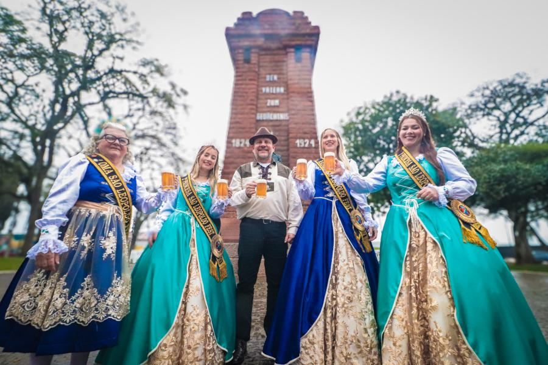

Localizada no Vale do Rio dos Sinos, a cidade de São Leopoldo possui uma história profundamente ligada à imigração europeia, especialmente alemã. Fundada oficialmente em 25 de julho de 1824, a cidade é considerada o berço da colonização alemã no Brasil, marcando o início de um importante fluxo migratório que ajudou a moldar a cultura, a economia e a identidade da região sul do país.
A criação da colônia foi incentivada pelo imperador Dom Pedro I, que buscava povoar e desenvolver o território brasileiro com trabalhadores europeus. Os primeiros imigrantes alemães chegaram à região enfrentando desafios como o clima, a adaptação ao novo ambiente e a escassez de infraestrutura. Ainda assim, com esforço e organização, conseguiram estabelecer comunidades agrícolas produtivas e estruturadas.
Com o passar dos anos, São Leopoldo se desenvolveu rapidamente, tornando-se um importante polo econômico e cultural. A herança alemã permanece viva até hoje, visível na arquitetura, na culinária típica, nas festas tradicionais e no idioma, que ainda é preservado por alguns descendentes.
Durante o século XX, a cidade passou por um processo de industrialização, destacando-se nos setores metalúrgico, calçadista e educacional. Atualmente, abriga instituições de ensino relevantes, como a Universidade do Vale do Rio dos Sinos (Unisinos), que contribui significativamente para o desenvolvimento regional. Assim, São Leopoldo representa não apenas um marco histórico da imigração no Brasil, mas também um exemplo de evolução urbana e cultural, mantendo vivas suas raízes enquanto se adapta às demandas contemporâneas.
Saiba mais a respeito da nossa história ou acesse nosso instagram!
Email: contato@prefeiturasaoleopoldo.com.br
Telefone: +55 17 99453-3391